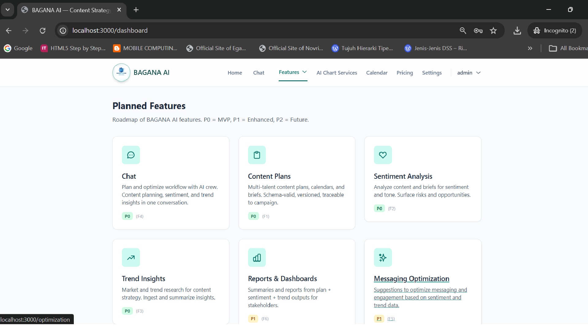
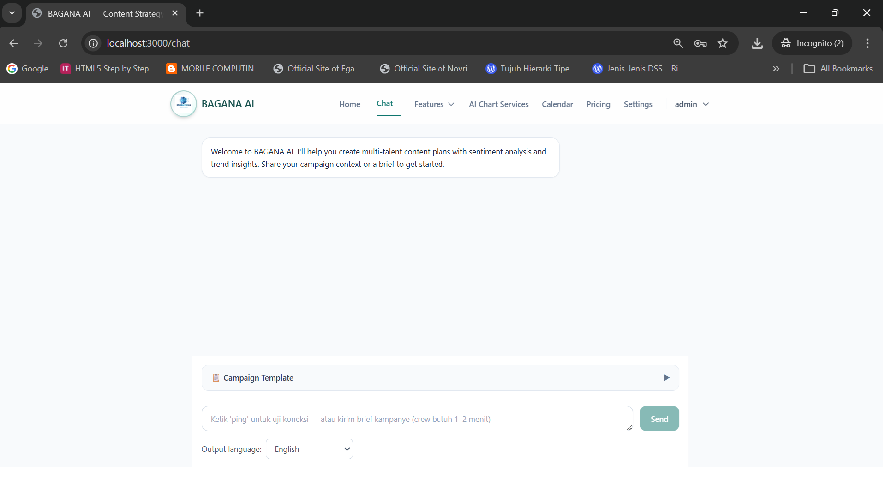
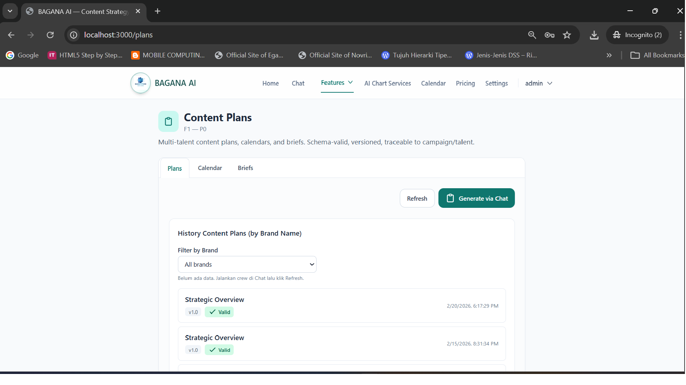
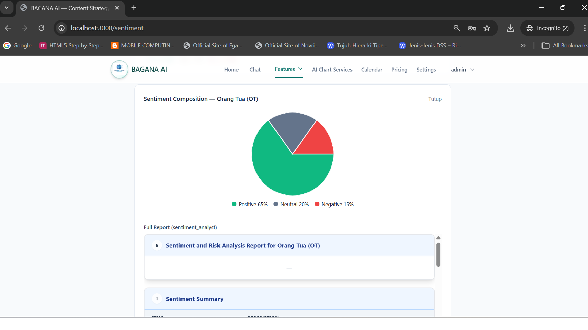
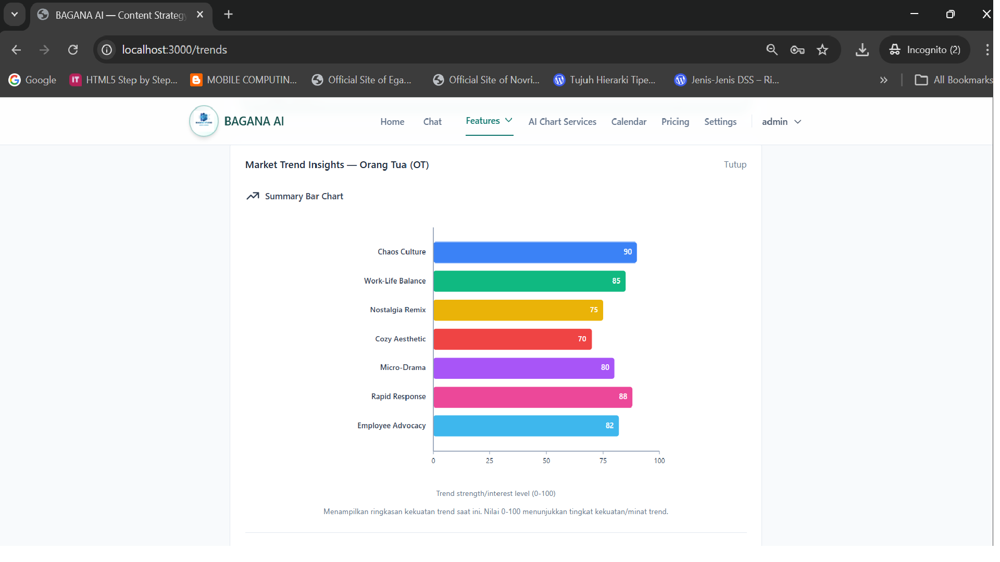

BAGANA AI
AI-powered platform for KOL, influencer, and content creator agencies to manage content strategy at scale through integrated content planning, sentiment analysis, and market trend insights.

Problem & Target Users
Agencies managing multiple KOLs/influencers struggle to coordinate content strategy, messaging, and performance at scale. Manual content planning, sentiment review, and trend tracking do not scale with talent roster size and campaign volume. Critical pain points include duplicated effort, inconsistent messaging, delayed insights, and reactive (not data-driven) campaign decisions.
BAGANA AI serves agency ops managers, content strategists, and campaign managers at KOL/influencer/content creator agencies (or in-house creator teams) managing 5+ creators or 10+ concurrent campaigns who need a single platform for strategy, planning, and insights.
Solution Overview
BAGANA AI is a multi-agent platform that integrates content planning, sentiment analysis, and market trend insights in one unified workflow. The platform enables agencies to create structured multi-talent content plans, optimize messaging and engagement, and deliver data-driven campaigns more efficiently without proportionally increasing manual workload.
The solution covers the full content strategy lifecycle: content planning (calendars, briefs, messaging aligned to campaigns), sentiment analysis (tone and sentiment inputs with risk/opportunity surfacing), and market trend insights (trend and market data to inform strategy and campaign alignment).
Key Features
- Multi-talent Content Plans (F1) — Create and edit structured content plans (calendars, briefs) for multiple talents/campaigns with schema validation and versioning.
- Sentiment Analysis (F2) — Analyze content or briefs for sentiment/tone and surface results in a consistent format with configurable inputs.
- Market Trend Insights (F3) — Ingest and summarize relevant trend/market insights for use in content strategy with defined sources and rate limits.
- Integrated Workflow (F4) — Planning, sentiment, and trend outputs available in one unified workflow without manual copy-paste between tools.
- Messaging Optimization (F5) — Suggestions to optimize messaging and engagement based on sentiment and trend data (P1).
- Reporting & Dashboards (F6) — Summaries and reports combining plan + sentiment + trends for stakeholders (P1).
- Modern Chat Interface — Production-grade AI chat experience using assistant-ui with streaming responses and conversation history.
Multi-agent AI Crew
Three specialized CrewAI agents orchestrate content strategy workflows through a sequential crew. Each agent operates independently with no delegation, ensuring predictable and auditable results. Agents are configured via YAML for easy adjustment without code changes.
| Agent | Role | Tools / Integrations | Trigger |
|---|---|---|---|
| Content Planner | Content strategy and multi-talent plan author — produces and updates structured content plans (calendars, briefs, messaging) aligned to campaigns | File I/O, plan schema validation, calendar/brief loaders | POST /api/crew (plan_content task) |
| Sentiment Analyst | Sentiment and tone analyst for content and briefs — analyzes content/briefs for sentiment and tone; surfaces risks and opportunities | Sentiment APIs or models, file I/O, schema validation | POST /api/crew (analyze_sentiment task) |
| Trend Researcher | Market and trend researcher for content strategy — gathers and summarizes relevant market/trend insights for plans and briefs | Approved web/API tools with rate limits, file I/O | POST /api/crew (research_trends task) |
Technical Architecture
- Frontend — Next.js 14.2.0 (App Router), React 18.3.x, TypeScript 5.x, Tailwind CSS 3.4.x, assistant-ui 0.12.x
- Backend — Python 3.12, CrewAI multi-agent framework, FastAPI (API layer), structured logging
- Data / storage — PostgreSQL (conversation history and session metadata), file-based storage for plans and artifacts
- Integrations — OpenRouter API (agent LLM), sentiment APIs, trend/data sources (configurable)
- Development Framework — AAMAD (AI-Assisted Multi-Agent Application Development) framework for context-driven development
Deployment
The entire platform runs via docker compose up --build, launching three containers: PostgreSQL (database), Next.js standalone (frontend on port 3000), and FastAPI/CrewAI (backend on port 8000). Designed for future cloud deployment on AWS or similar infrastructure. The system supports both interactive and batch workflows with streaming responses for improved UX.
Screenshots
Main Dashboard — Central hub showing all features and navigation to content planning, sentiment analysis, and trend insights.
Chat Interface with CrewAI Integration — Production-grade AI chat using assistant-ui with streaming responses, conversation history, and campaign template form.
Content Plans Page — Multi-talent content planning interface showing structured plans, calendars, and briefs aligned to campaigns.
Sentiment Analysis Page — Sentiment and tone analysis interface with risk/opportunity surfacing for content and briefs.
Trend Insights Page — Market and trend research interface showing relevant insights for content strategy.
My Role & Learnings as Agentic Architect
- Designed a YAML-driven agent configuration system that separates agent definitions from application code, making it easy to adjust agent behavior without code changes — following AAMAD framework principles.
- Built a sequential crew orchestration pattern ensuring deterministic, auditable builds with explicit context passing between tasks — critical for reproducible content strategy workflows.
- Implemented a modern LLM interface using assistant-ui for production-grade AI chat experience with streaming responses and conversation persistence to PostgreSQL.
- Containerized a full-stack multi-agent system (Next.js + FastAPI + PostgreSQL) with Docker Compose, including health checks and proper service dependencies.
- Applied AAMAD framework methodology throughout development, creating comprehensive artifacts (PRD, SAD, build documentation) ensuring explainability and reproducibility.
- Designed a unified workflow that eliminates manual copy-paste between tools, proving the value proposition of integrated content planning + sentiment + trend insights in one platform.
- Learned to structure CrewAI agents with
allow_delegation=falsefor predictable results while maintaining specialized agent roles for content planning, sentiment analysis, and trend research.